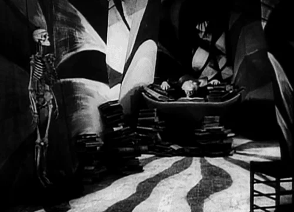
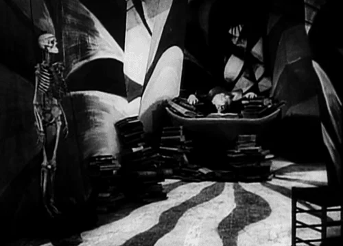
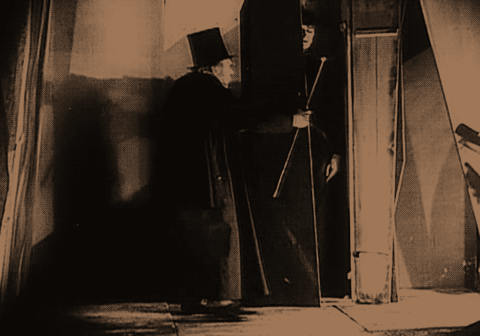
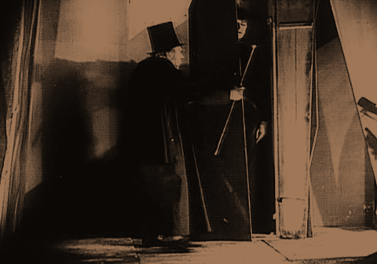

The expressionistic techniques of German cinema were determined by their
historical time period. Expressionism had originated in painting and theater, but had
made its way into cinema during the 1920s and 1930s, as a reaction against realism.
This was a direct reaction to the aftermath of World War I. The excessive visual style
of these films were an escape or break from reality. In many instances, we can see
how, in these films, reality has lost its basis.
The stylistic techniques and formal qualities of German Expressionism films include
the exploration of themes of paranoia, fear, and schizophrenia through mise-en-
scène, cinematography and lighting. F. W. Murnau's Nosferatu (1922) and The Last
Laugh (1924) and Fritz Lang's M (1931) are films whose worlds are consumed with
fear and corruption. The German Expressionism films of this time period were
characterized by their expressive approach in externalizing human emotion and
desire. These films conveyed inner, subjective emotions and experiences through
external, objective means. These emotions were visually translated onto the screen
using deliberately exaggerated sets and dramatic lighting, emphasizing the fear and
horror that encapsulated the narrative.>
These films focus on a reality that has been invaded and plagued by the irrational
and cynical thoughts of its characters, and consequently, the sets in these films
resemble their distress. These films make use of studio sets rather than actual
locations, with distorted buildings painted on canvas backdrops in a
theatrical manner.
 
The Cabinet of Dr. Caligari makes use of expressionist architecture and expresses
interior reality through exterior means with its use of extreme distortion in its
production design. The film, as a result, presents us with a dark and twisted world
with distorted shapes and angles. This expressive style presents us with a grotesque
worldview - buildings are slanted, doors and windows are unusually shaped and
walls and floors consist of schizophrenic patterns and designs. The hallways,
intersections, and buildings in the film are all artificial and unnatural. In addition to
the design of the sets, the excessive stylization also extends to the intertitles of the
film. The texture, underscoring of certain words and phrases, and lettering
emphasize a schizophrenic state of mind.
The Cabinet of Dr. Caligari further confines its audience in a claustrophobic setting
through its use of lighting. The surrounding space of a subject's face in close-up is
often darkened. This is seen with Cesare's introduction - his gruesome appearance is
emphasized because the frame is made up of just his face. The murder of Alan also
uses harsh shadows and low-key lighting as a way of heightening the drama and
spatially disorienting the audience. The audience never sees the actual murder -
instead, we focus on a nearby wall on the shadows that wrestle for their lives.


The space we analyzed in our diagram is the most private of spaces, Dr. Caligari's
house, in a scene where Francis and the doctor visit his house and demand that he
wakes Cesare up. Dr. Caligari's house becomes a significant focal point throughout
the film. This is his private dwelling, a space where he distances himself from
society, and where he keeps Cesare hidden in a coffin. In our research, we noticed
that the interior and exterior shots of his house don't match. The width of the house
from the exterior appears no more than six feet in length, while the interior space
appears slightly wider in size.
The shape and form of Dr. Caligari's house essentially communicates the perverse
nature of his being. The house is unusually small in size and is nothing more than a
single room. The interior space consists of painted lines, as well as harsh lighting
from a lamp, which matches these sharp angles on the floor and walls. The diagram
highlights these lines and shadows and emphasizes how much more claustrophobic
the interior space feels because of them. Dr. Caligari's only means to the outside
world is a warped window. The window's distorted shape, its twisted and deformed
frame, essentially conveys Dr. Caligari's point-of-view of the outside world.
 
